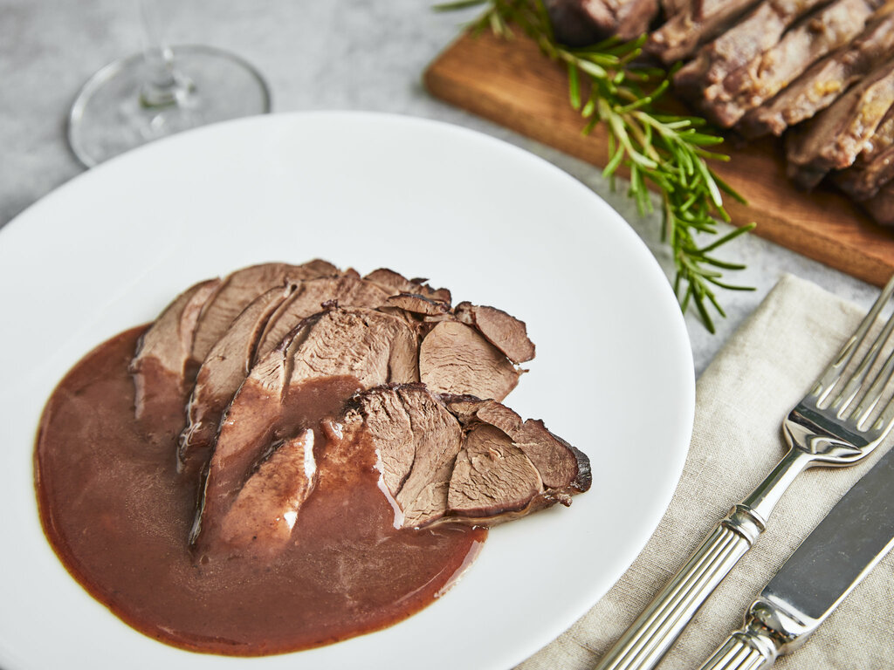

Wildschweinbraten
Zubereitung: 2 Stunden
Schwierigkeit: Mittel
Zutaten für 4 Personen:
- 1 kg Wildschwein-Braten
- ¼ TL Salz
- 2 - 3 Prisen Pfeffer
- 20 g Mehl
- 50 ml Sonnenblumenöl (oder Butterschmalz zum Braten)
- ¼ Lauch
- 2 Möhren
- ¼ Sellerie
- 2 Zwiebeln
- 2 EL Tomatenmark
- 300 ml Rotwein
- 400 ml Wildfond (ersatzweise: Wasser)
- 1 Lorbeerblatt
- 1 Rosmarinzweig
- 5 schwarze Pfefferkörner
- 2 Gewürznelke
- 3 Wacholderbeeren
Zubereitung:
- Den Wildschweinbraten rundherum mit Salz und Pfeffer würzen, in Mehl wenden und das überschüssige Mehl abklopfen. In einem Bräter oder einer Pfanne das Öl oder das Butterschmalz heiß werden lassen und das Fleisch bei mittlerer bis hoher Hitze anbraten, bis es eine goldgelbe Farbe hat. Den Braten herausnehmen und beiseitestellen.
- Den Lauch, die Möhren und den Sellerie waschen und putzen. Den Lauch in Scheiben schneiden. Die Möhren, den Sellerie und die Zwiebeln schälen und in 2 x 2 cm große Würfel schneiden. Das Gemüse ohne den Lauch in den Bräter oder die Pfanne geben und bei mittlerer Hitze ca. 5 Minuten anrösten.
- Nach 3 Minuten den Lauch hinzugeben, dieser würde sonst zu schnell verbrennen. Das Tomatenmark hinzufügen und langsam mitrösten. Sobald das Tomatenmark etwas dunkler geworden ist, mit einem Drittel des Rotweins ablöschen und einkochen lassen. Diesen Vorgang noch 2 x wiederholen, bis der Rotwein aufgebraucht ist, damit die Sauce kräftig und dunkel wird.
- Mit Wildfond oder Wasser aufgießen. Das Lorbeerblatt, den Rosmarinzweig und die Pfefferkörner, Gewürznelken und Wacholderbeeren (am besten in einem Gewürz-Ei oder -Säckchen) hinzugeben.
- Den Backofen auf 150 Grad Ober- und Unterhitze (130 Grad Umluft) vorheizen. Das Fleisch in eine Auflaufform setzen, die Sauce mit dem Gemüse aus der Pfanne dazugeben und im Backofen auf mittlerer Schiene etwa 1,5-2 Stunden garen (falls du einen Bräter verwendet hast, kannst du das Fleisch in den Bräter zur Sauce legen und im Ofen ohne Deckel garen). Den Braten nun aus dem Fond nehmen und in Scheiben schneiden.
- Die Sauce ohne die Gewürze durch ein feines Sieb in einem Topf passieren. Dabei das Gemüse mit durchstreichen. So wird die Sauce schön sämig. Die Bratenscheiben nochmals in der Sauce erwärmen und servieren. Guten Appetit!
zurück